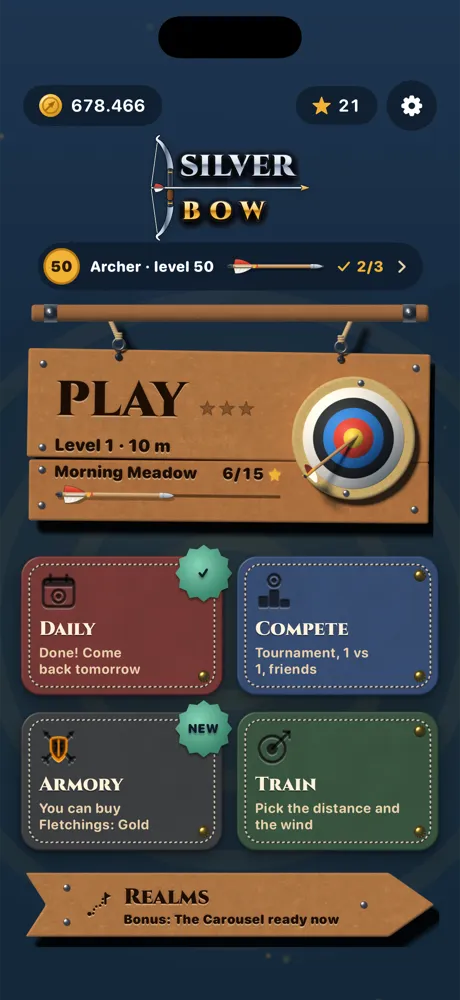
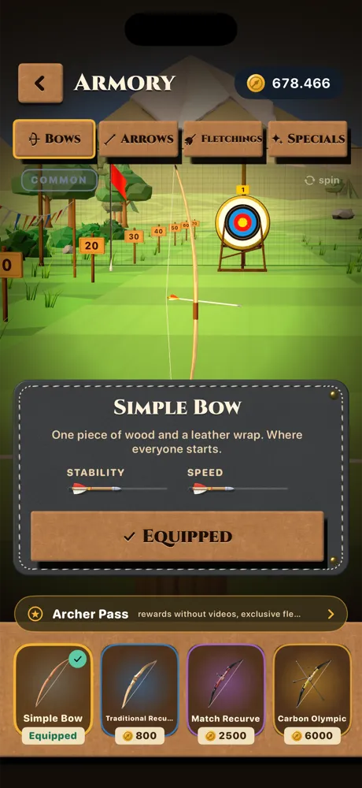
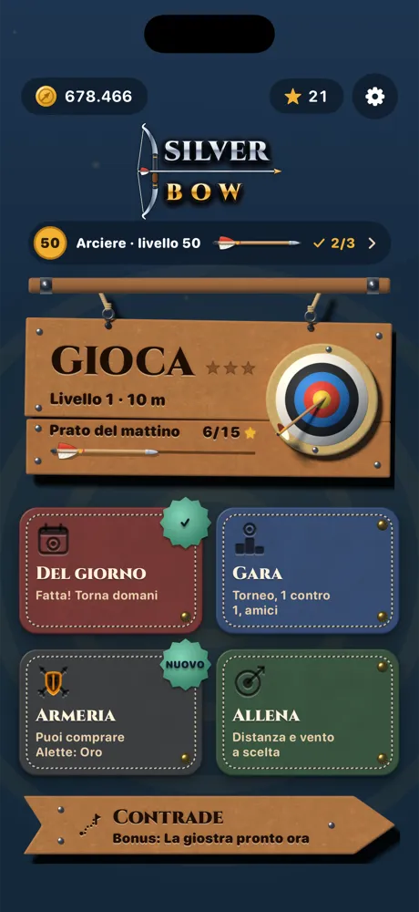
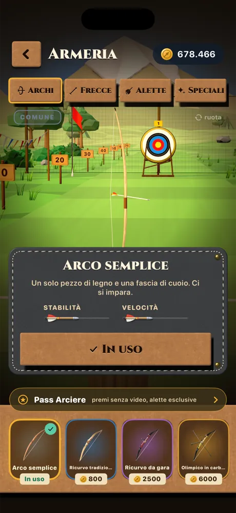
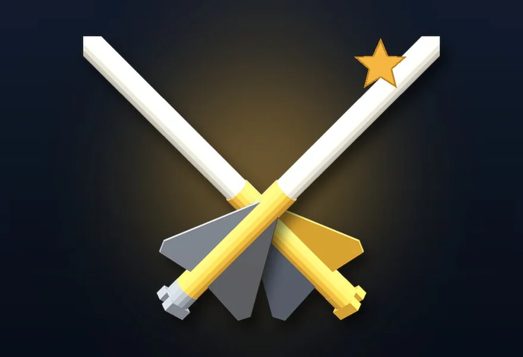

Daily challengeSfida del giorno
The same wind and distance for everyone, every day. Keep the streak going for bigger rewards.Stesso vento e stessa distanza per tutti, ogni giorno. Tieni viva la serie per premi più grandi.
Read the wind. Hit the gold.Leggi il vento, fai centro.
Archery the way it feels: draw the string, read the wind and wait for the still moment of your breath. Then let go. Il tiro con l'arco come si sente davvero: tendi la corda, leggi il vento e aspetti il momento fermo del respiro. Poi lasci.
How it playsCome si gioca
The same for right- and left-handers, learned on the first arrow. No buttons to find while you aim: the middle of the screen is all field and sight. Uguale per destri e mancini, si impara sulla prima freccia. Nessun bottone da cercare mentre miri: il centro dello schermo è solo campo e mirino.
Your finger turns the bow and the sight follows. Aim calmly: the string isn't drawn yet.Il dito gira l'arco e il mirino lo segue. Punta con calma: la corda non è ancora tesa.
Hold still and the bow draws itself, with the creak of the string. Hold too long and your arm shakes.Fermo un attimo e l'arco si tende da solo, con lo scricchiolio della corda. Se aspetti troppo il braccio trema.
Lift your finger and the arrow flies, the camera chasing it to the straw.Sollevi il dito e la freccia parte, con la camera che la insegue fino alla paglia.
The wind.Il vento. Flags, grass and the wind arrow tell you where it blows. Gusts come and go: aim into it.Bandiere, erba e la freccia del vento dicono da dove soffia. Le raffiche vanno e vengono: mira controvento.
The breath.Il respiro. At full draw the sight settles for one still moment. Release there: a clean shot.Ad arco teso il mirino si ferma per un solo momento. Rilascia lì: un tiro pulito.
The distance.La distanza. From 10 to 70 metres. Far away the arrow drops: aim above the gold.Da 10 a 70 metri. Da lontano la freccia cala: mira sopra il giallo.
The RealmsLe Contrade
Each place has its own light and its own life, and every level asks something different: a number of golds, never below a ring, beating an archer who has already shot, one arrow that counts, six against the clock. Ogni posto ha la sua luce e la sua vita, e ogni livello chiede qualcosa di diverso: un numero di gialli, nessuna freccia sotto un anello, battere un arciere che ha già tirato, un solo tiro che vale tutto, sei frecce contro il tempo.
Rabbits and butterflies, an orchard with swinging apples, a farm pond with ducks and a weathervane.Conigli e farfalle, un frutteto con le mele che dondolano, un laghetto con le anatre e la banderuola.
Windmills and sheep, a windy beach with gulls, sea cliffs with a lighthouse.Mulini e pecore, una spiaggia ventosa con i gabbiani, la scogliera con il faro.
Falling leaves and a passing deer, a misty marsh with fireflies, a snowy forest with a smoking cabin.Foglie che cadono e un cervo che passa, una palude nella nebbia con le lucciole, un bosco innevato con la baita.
A castle with torches in the wind, a red canyon with an eagle, an arena by night with the crowd.Un castello con le torce nel vento, un canyon rosso con un'aquila, un'arena di notte con il pubblico.
More to shoot atAltro da colpire
The same wind and distance for everyone, every day. Keep the streak going for bigger rewards.Stesso vento e stessa distanza per tutti, ogni giorno. Tieni viva la serie per premi più grandi.
A weekend tournament against four archers, one-on-one matches in sets, and challenges sent to friends with a link.Un torneo nel weekend contro quattro arcieri, sfide uno contro uno a set, e sfide agli amici con un link.
Balloons, clays, swinging apples, a carousel, wooden birds, a running deer and a very distant gong.Palloncini, piattelli, mele che dondolano, una giostra, uccelli di legno, un cervo che corre e un gong lontanissimo.
At the end of each zone a wheel of medallions turns: hit them as they light up, three times, and watch it fall.Alla fine di ogni zona gira una ruota di medaglioni: colpiscili quando si accendono, tre volte, e guardala cadere.
Hit the nock of the arrow already in the gold and split it in two. Combos set your arrows on fire.Colpisci la cocca della freccia già nel giallo e aprila in due. Le combo danno fuoco alle frecce.
From a simple stave to the full olympic recurve, arrows that cut the wind, fletchings and special arrows.Da una doga semplice all'olimpico completo, frecce che tagliano il vento, alette e frecce speciali.
Inside the gameDentro il gioco










Free and fairGratis e onesto

One optional purchase, for looks only: rewards without videos, two exclusive fletchings, the Silver Archer badge.Un solo acquisto facoltativo, solo estetico: premi senza video, due alette esclusive, il badge Arciere d'argento.
Free on iPhone and Android. No account: open it and shoot.Gratis su iPhone e Android. Nessun account: apri e tira.

Who makes itChi lo fa
Made by one developer in Italy: every place, every bow and every sound built by hand. The sounds are synthesised as you play. Fatto da uno sviluppatore solo, in Italia: ogni posto, ogni arco e ogni suono costruiti a mano. I suoni nascono mentre giochi.
Questions, problems or ideas? Write to us. Include your device model, system version and, if you can, what you were doing when the problem appeared.Domande, problemi o idee? Scrivici. Indica il modello del dispositivo, la versione del sistema e, se puoi, cosa stavi facendo quando è comparso il problema.
Your progress lives on your phone. Bought the Archer Pass on a new phone? Open the Archer Pass and tap Restore purchases.I progressi stanno sul telefono. Hai comprato il Pass Arciere e cambiato telefono? Apri il Pass Arciere e tocca Ripristina acquisti.